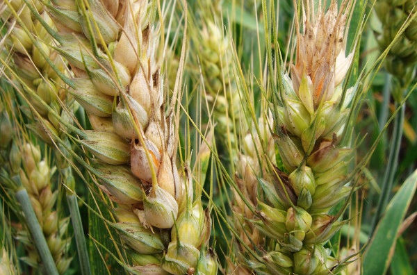
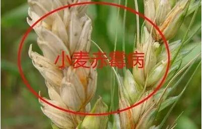

MOTIVATION
Cereal crops such as wheat, maize and rice commonly suffer from devastating plant diseases caused by pathogenic microbes worldwide, posing great danger to global food safety and human survival. Fusarium head blight (FHB) caused by the filamentous fungus Fusarium graminearum is a major problem to global wheat and barley production, reducing yield and polluting the grains with toxic and carcinogenic mycotoxins. Some studies have shown that the related toxins are related to the occurrence of human chronic diseases such as gastric cancer and esophageal cancer.It is well accepted that pathogen infection process and secondary metabolisms are under intricate gene regulations. To develop better disease management strategy, it demands a deeper and systemic understanding of the gene regulation mechanisms on fungal virulence, development and mycotoxin production. However, our current knowledge of such mechanisms remains limited, particularly at systems level.
Fusarium head blight (FHB), caused by the filamentous ascomycete Fusarium graminearum (F. graminearum), is one of the most devastating diseases in wheat , barley and other small grains around the world.
FHB results in yield loss and contamination of grains with mycotoxins, fungal secondary metabolites toxic to animals, including humans.
The management of FHB remains challenging because of a lack of effective resistant wheat cultivars and the prevalence of pathogen resistance to fungicides. The understanding of F. graminearum pathobiology at the systems level is vital to effective disease and mycotoxin management.
more about FHB